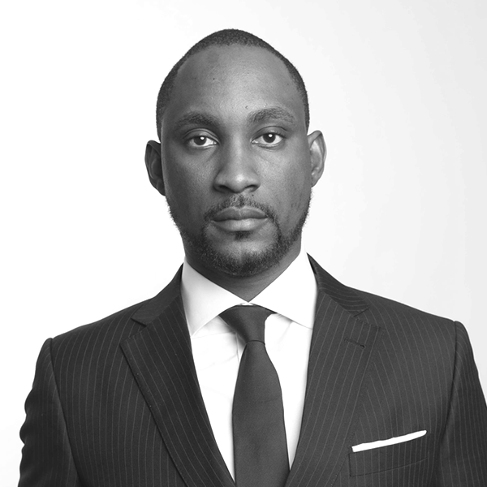

Adedeji Olowe is a 43 year old father of 3 children;
Darasimi Deji-Olowe,Tanidabioluwa Deji-Olowe & Teniola Deji-Olowe
Adedeji Olowe is the Founder and CEO of Lendsqr. He's also the founder and trustee of Open Banking Nigeria.
Find more on his Wikipedea entry